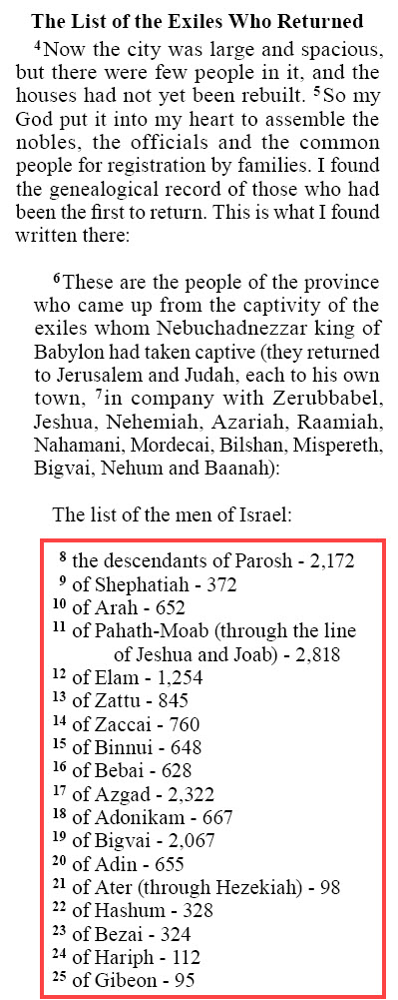

lim#
Summary
- Description
-
Embedded list entry.
-
The variable
#represents the level of indent.
-
- Syntax
-
-
USFM:
\lim#_text... -
USX:
<para style="lim#">text...</para>
-
- Added
-
3.0
Properties
- StyleType
-
Paragraph
- OccursUnder
-
[ChapterContent],[SidebarContent] - TextType
-
VerseText
- TextProperties
-
paragraph, publishable, vernacular
Examples
Example 1. Nehemiah 7.4-25 (NIV)
\s1 The List of the Exiles Who Returned
\p
\v 4 Now the city was large and spacious, but there were few people in it,
and the houses had not yet been rebuilt.
\v 5 So my God put it into my heart to assemble the nobles, the officials
and the common people for registration by families. I found the genealogical
record of those who had been the first to return. This is what I found written
there:
\b
\pm
\v 6 These are the people of the province who came up from the captivity of
the exiles whom Nebuchadnezzar king of Babylon had taken captive (they returned
to Jerusalem and Judah, each to his own town,
\v 7 in company with Zerubbabel, Jeshua, Nehemiah, Azariah, Raamiah, Nahamani,
Mordecai, Bilshan, Mispereth, Bigvai, Nehum and Baanah):
\b
\pm The list of the men of Israel:
\b
\lim1
\v 8 the descendants of Parosh - 2,172
\lim1
\v 9 of Shephatiah - 372
\lim1
\v 10 of Arah - 652
\lim1
\v 11 of Pahath-Moab (through the line of Jeshua and Joab) - 2,818
\lim1
\v 12 of Elam - 1,254
\lim1
\v 13 of Zattu - 845
\lim1
\v 14 of Zaccai - 760
...
